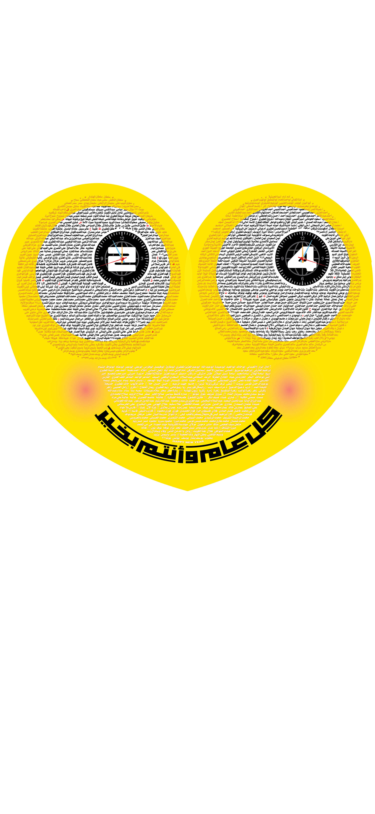

<audio id="najat" src="najat.mp3" preload="auto"></audio>
<audio id="sheren" src="sheren.mp3" preload="auto"></audio>
<audio id="wardeh" src="wardeh.mp3" preload="auto"></audio>


<script>


  function najat() {
        var audio = document.getElementById("najat");

        if (audio.duration > 0 && !audio.paused) {
            audio.pause();
            audio.currentTime = 0;
        } else {
            audio.play();
        }
    }


 function sheren() {
        var audio = document.getElementById("sheren");

        if (audio.duration > 0 && !audio.paused) {
            audio.pause();
            audio.currentTime = 0;
        } else {
            audio.play();
        }
    }

 function wardeh() {
        var audio = document.getElementById("wardeh");

        if (audio.duration > 0 && !audio.paused) {
            audio.pause();
            audio.currentTime = 0;
        } else {
            audio.play();
        }
    }


</script>


<map name="image-map">
  
  
    <area target="_blank" alt="" title="" href="" onclick="javascript:najat(); return false; " coords="686,411,998,698" shape="rect">
    <area target="_blank" alt="" title="" href="" onclick="javascript:sheren(); return false; " coords="134,402,479,698" shape="rect">
    <area target="_blank" alt="" title="" href="" onclick="javascript:wardeh(); return false; " coords="239,798,322,897,434,948,527,977,586,963,645,958,736,932,805,891,890,803,876,774,819,755,645,873,549,870,469,858,403,807,342,752,289,743" shape="poly">

  <area target="_blank" alt="" title="" href="https://twitter.com/abjadi2020" coords="431,805,493,832,520,854,563,852,619,849,663,827,682,807,669,784,624,784,470,784,429,777" shape="poly">

</map>

